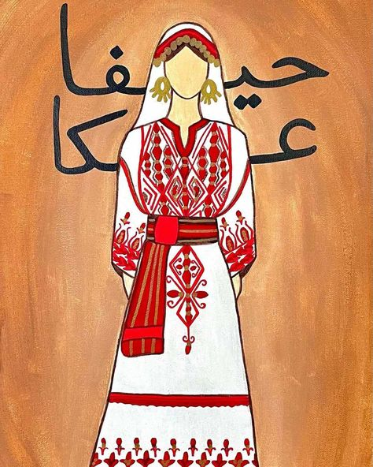
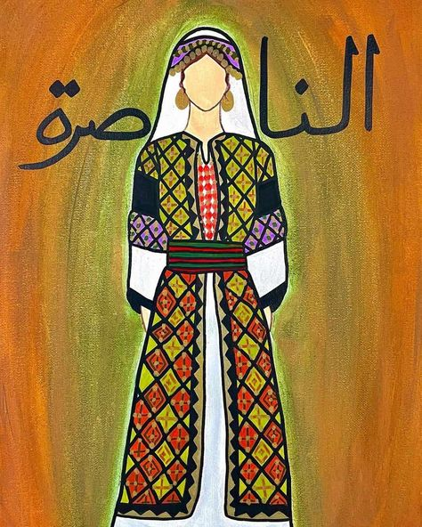
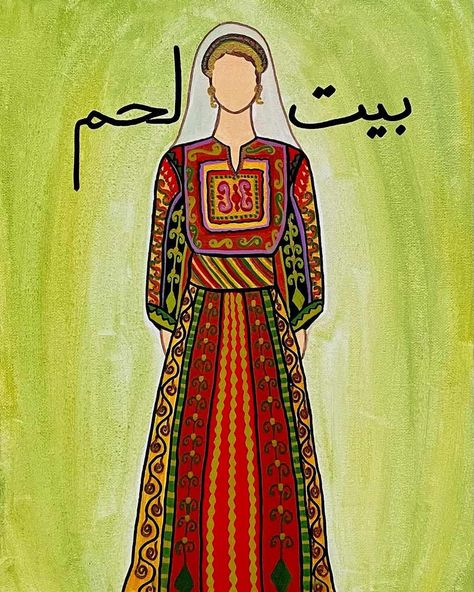

Regional dress · 01
Akka
The coastal city’s embroidery is known for expressive motifs and a rich meeting of local influences.
The Palestinian wardrobe · A regional collection
From one town to another, traditional Palestinian dresses carry a remarkable language of colour, stitch and memory. Explore a selection of regional thoubs and the heritage woven into their details.
10 REGIONAL STORIES

Regional dress · 01
The coastal city’s embroidery is known for expressive motifs and a rich meeting of local influences.

Regional dress · 02
A tradition of detailed needlework, with patterns passed from one generation to the next.

Regional dress · 03
A regional style shaped by the cultural memory and craft traditions of the Galilee.

Regional dress · 04
A visual language of colour and pattern that reflects the diversity of Palestinian dress.

Regional dress · 05
Celebrated for its distinctive embroidery, careful workmanship and meaningful motifs.

Regional dress · 06
A living craft in which local patterns carry stories of place, family and identity.

Regional dress · 07
A layered embroidery heritage connected to the city’s long and diverse history.

Regional dress · 08
Recognisable motifs and finely worked details express a strong sense of belonging.

Regional dress · 09
Traditional needlework preserves regional techniques while keeping the art alive.

Regional dress · 10
A coastal heritage remembered through elegant motifs, colour and skilled handwork.